像玩游戏一样,
通关 Agent 面试
把 148 道 AI 应用开发面试题（Agent / RAG，14 章）变成蛇形闯关地图 + 学习卡片 + 四选一测验， 支持接入任意 OpenAI 兼容大模型 API 做 AI 解读与批量生成选择题。纯静态、无构建、开箱即用。
- 真题题库
- 148 题
- 结构化章节
- 14 章
- 价格
- ¥0 开源
接入任意 OpenAI 兼容大模型 API —— AI 解读、批量生成选择题都能用
- OpenAI
- DeepSeek
- GLM
- Ollama
- vLLM
- 任意兼容服务…
API Key 仅存本机浏览器，请求直连你配置的服务
核心痛点
备考 Agent 岗的你，是否也遇到过？
传统备考方式 😩
- ❌面试八股看完就忘，没有「回忆→验证」的闭环
- ❌题库散落在 markdown 文档里，只能从头翻到尾，无法刷
- ❌不知道自己到底记住了没有，缺乏即时判题反馈
- ❌想让 AI 帮忙解读考点，要开好几个网页来回粘贴
- ❌刷题进度没处追踪，不知道哪章薄弱
AgentInterview 的答案 🎉
- ✅学习卡片「先想后看」：先自己回忆，再展开参考答案，记忆留存率更高
- ✅148 题 14 章结构化题库，蛇形路径按序解锁，像玩游戏一样刷完
- ✅四选一章节测验，即时判题 + 解析，答错自动进错题本
- ✅AI 解读一键生成：考点提炼 + 回答框架 + 常见追问 + 易错点
- ✅XP 经验值、连续学习天数、总进度环、各章进度条，薄弱章节一目了然
功能特性
六个模块,组一条完整的刷题闭环
从闯关地图到错题复盘,每个环节都为「记得住、刷得动」而设计。
学习路径
蛇形章节节点地图，按顺序解锁（学过上一章任意一题即解锁下一章），也可在设置中一键解锁全部章节。每章有独立图标与配色。
学习模式
每轮 8 题，先想后看。点击「查看参考答案」展开完整 markdown 答案，代码块、表格、图片均正常渲染。支持返回上一题恢复状态。
章节测验
四选一选择题，即时判题 + 一句话解析 + 错题展示参考答案。正确率 ≥60% 记为通过，通过后解锁下一章。
AI 解读（可选）
配置任意 OpenAI 兼容 API（baseURL / model / apiKey），学习页一键生成「考点 + 回答框架 + 常见追问 + 易错点」四段式解读。API Key 仅存本机浏览器。
批量生成选择题（可选）
前端设置页逐题调用 LLM 生成四选一；终端脚本 tools/gen_quiz.py 逐题落盘、断点续跑（中断后重跑自动跳过已生成），支持 --force 重新生成。生成内容自动清洗与校验。
统计与错题本
总进度环、XP、连续学习天数、各章进度条。答错的题自动收进错题本，可查看详情与参考答案，重点攻克薄弱环节。
学习闭环
学 → 测 → 复,三步上瘾
-
1
学 · 先想后看
每轮 8 题的学习卡片：先自己回忆，再展开参考答案对照，markdown 代码块、表格完整渲染，记忆留存率更高。
-
2
测 · 即时判题
四选一章节测验，答完立刻判题 + 一句话解析，正确率 ≥60% 通过并解锁下一章，闯关感拉满。
-
3
复 · 错题攻克
答错自动收进错题本，配合 XP、连续天数与各章进度环，薄弱章节一目了然，针对性复盘。
界面预览
12 张真实截图,一眼看懂全部玩法
以下截图全部来自 assets/，固定高度裁切对齐，点击任意一张可在新标签页查看原图。
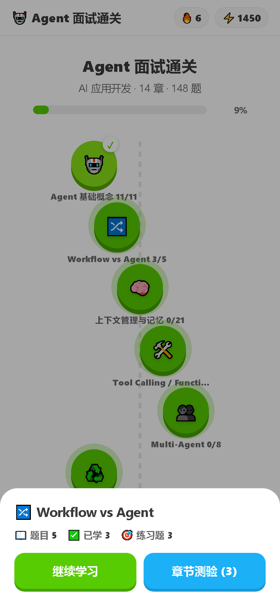
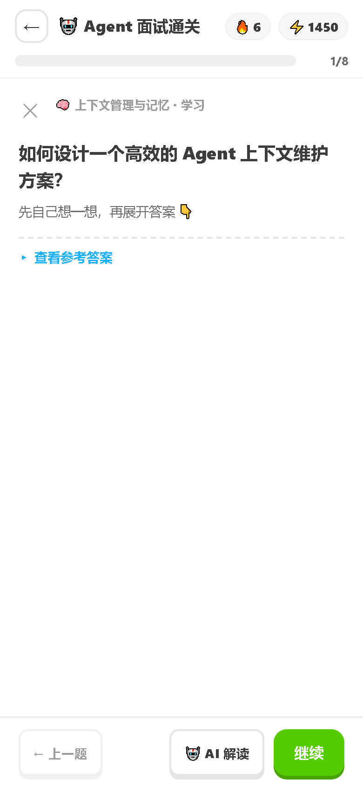
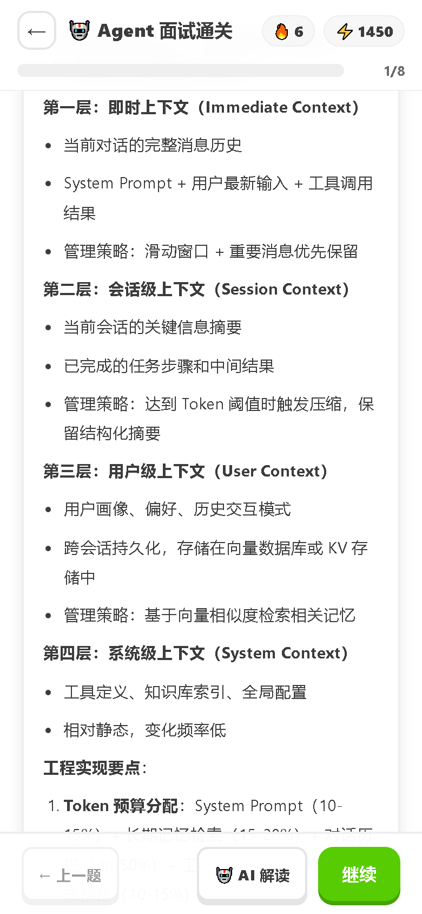
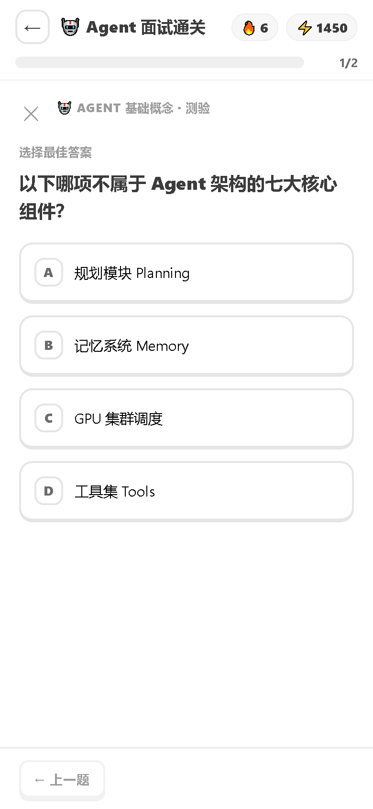
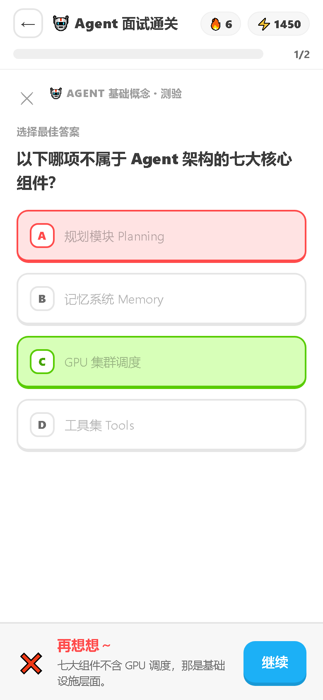
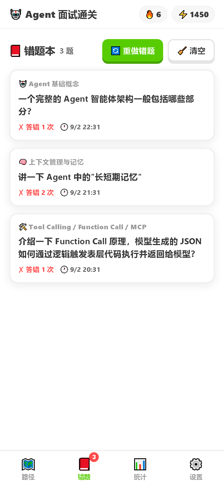
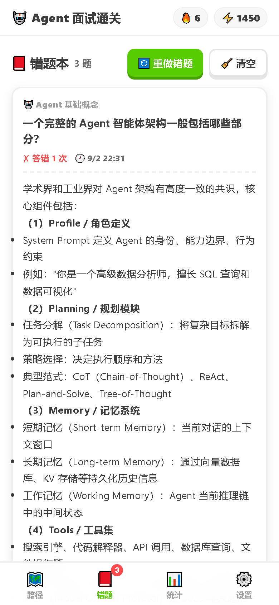
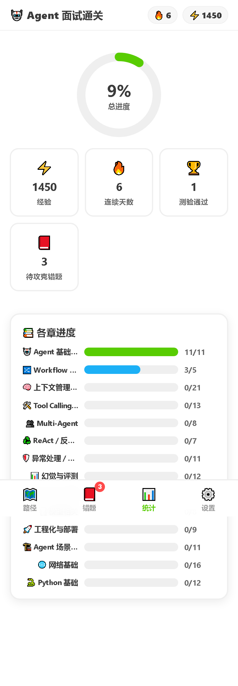
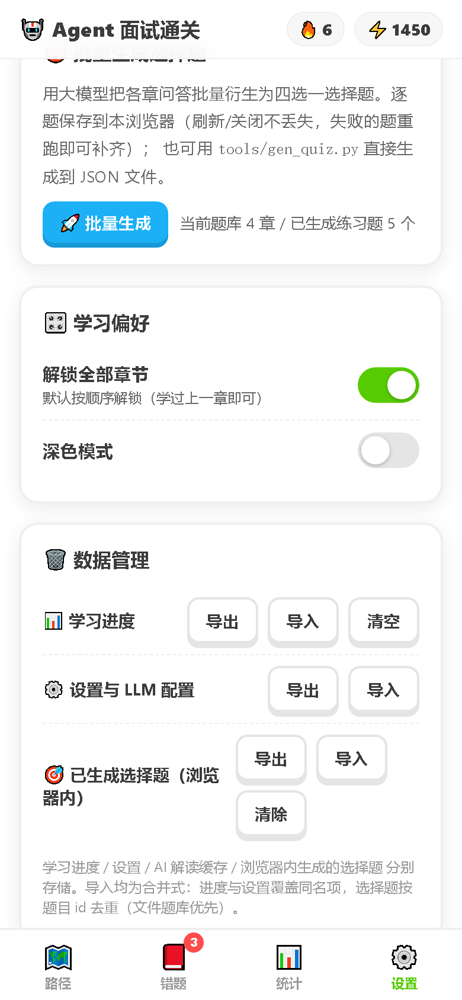
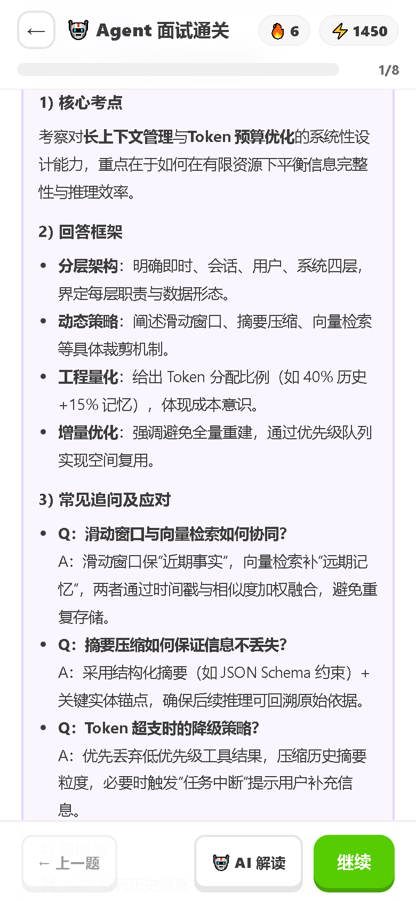
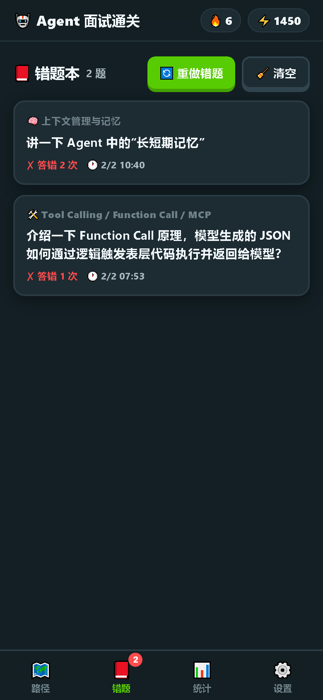
三步快速上手
免费开源
两条命令开始刷题
无需注册、无需付费、无构建依赖。克隆下来起一个静态服务，打开浏览器就能刷。
- ✓零注册 · 零付费
- ✓纯静态，任意静态服务器都能跑
- ✓进度数据全部保存在本机
# 1. 克隆仓库
$ git clone https://github.com/Samge0/AgentInterview.git
# 2. 起本地服务
$ cd AgentInterview && python -m http.server 8377
# 3. 浏览器打开，开始刷题
$ open http://127.0.0.1:8377
注意：直接双击 index.html（file:// 协议）无法加载 JSON 题库，务必通过 HTTP 服务访问（如 python -m http.server 或任意静态服务器）。
方案对比
为什么不用传统方式
| 特性 | markdown 文档翻看 | 八股文网站收藏夹 | AgentInterview |
|---|---|---|---|
| 结构化题库 + 章节进度 | ❌ | 部分 | ✅ 14 章 148 题 |
| 主动回忆式学习（先想后看） | ❌ | ❌ | ✅ |
| 即时判题 + 错题本 | ❌ | 部分 | ✅ 自动收录 |
| AI 解读考点 / 追问链 | ❌ | ❌ | ✅ 一键生成 |
| 离线可用 / 数据在本机 | ✅ | ❌ | ✅ 纯静态 + localStorage |
| 移动端适配 + 暗色模式 | — | — | ✅ |
技术与隐私
轻、透、稳:数据只属于你
纯静态前端
原生 JS + marked.js + DOMPurify（均本地引入），无构建、无依赖、无后端。
题库解耦
data/questions/ 每章一个 JSON，加题/加章/改题直接编辑文件，tools/extract_questions.py 可从源 markdown 重新抽取。
进度本地保存
浏览器 localStorage，设置页可导出 JSON 备份。
API Key 安全
仅存本机浏览器，请求直接从浏览器发往所配置的服务。
体验细节
移动端适配（420px 设计基准）、深色模式、对比度按 WCAG AA 校验。
🟢 无后端 · 无埋点
无数据上传
常见问题
FAQ
双击 index.html 打不开题库？
file:// 协议无法 fetch JSON，请用 python -m http.server 或任意静态服务器。
API Key 会上传吗？
不会。Key 仅存本机浏览器 localStorage，请求直连你配置的服务。
支持哪些模型？
任意 OpenAI 兼容 API：本地 vLLM / Ollama、OpenAI、DeepSeek、GLM 等均可。
想改题 / 加题？
直接编辑对应章节 JSON，或用 tools/ 下的脚本从源 markdown 重新抽取与生成。
觉得有用的话，去 GitHub 点个 Star 支持一下！
纯静态 · 开源免费 · 148 题 14 章持续更新 —— clone 下来，今晚就开始刷。